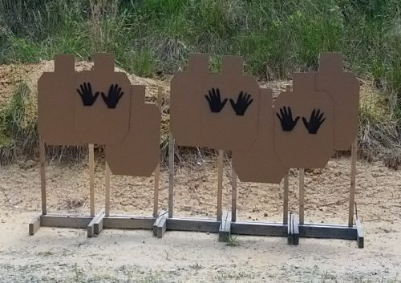

At one point in time Caswell Ranch took a hiatus from IDPA. I took an even longer hiatus from shooting. But I’m back and Caswell Ranch is back to offering IDPA matches the 4th Sunday of the month. This month they will be offering a 5th Sunday match – even though it’s not on the calendar. Contact info is here if you want to verify the match.
I shot the match on May 24th and stuck around for a classifier after the match.

We shot 6 stages on a beautiful spring day. We started with a car scenario. We shot these 4 targets through the passenger window, then exited the car and shot one target while backing away from the driver’s door, moved to the rear of the car and shot a few more.
When we shot in the shoot houses, there was no way to really get good video. The other 3 are included below. I’m very new to video editing so this was the result of playing around with new video editing software.
A few comments:
- I am painfully slow at shooting one handed. But I am fairly accurate. The first shot is double action and a longer pull, but even so, that’s WAY too long. These were all headshots and some only part of a head, but even so…. Since it’s not on the video, I included a photo of the targets.

Headshots Only. One hand only. Are you kidding me?
- I need to learn to transition the gun from hand to hand better. When I moved from strong hand to both hands, I hand a lot of extra thumb action.
- I don’t have my supporting hand positioned correctly – the thumb is way too high in most cases.
- I need to stop pulling the magazines out of the gun. They will drop. That’s bad habit I picked up from my XDS.
- On the second stage I needed the front magazine (loaded to 3 rounds) but grabbed the back magazine, realized the mistake, and fixed it. I’ve never grabbed the back magazine before. So, something new to focus on during dry fire practice.
- On the positive side, I started the last stage looking at the first target.
{kind=link}
Thanks to Rusty for running video for me!
A friend txt’d me and added: You are leaning too far back. The recoil is rocking you backwards… so I’ll add that to the list of things to be aware of and work on.